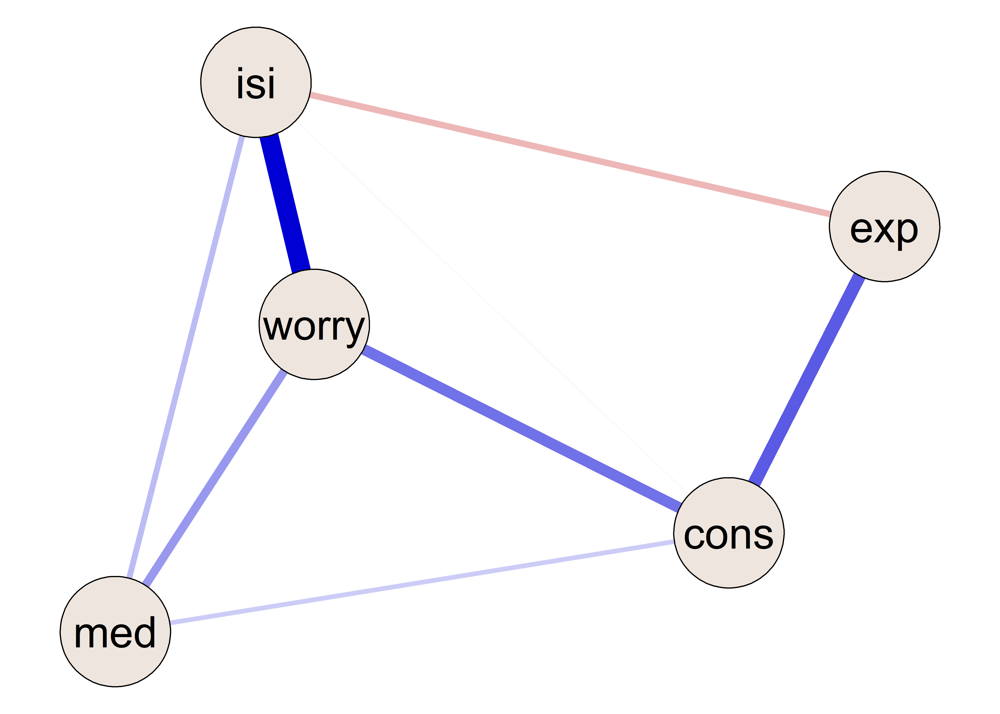
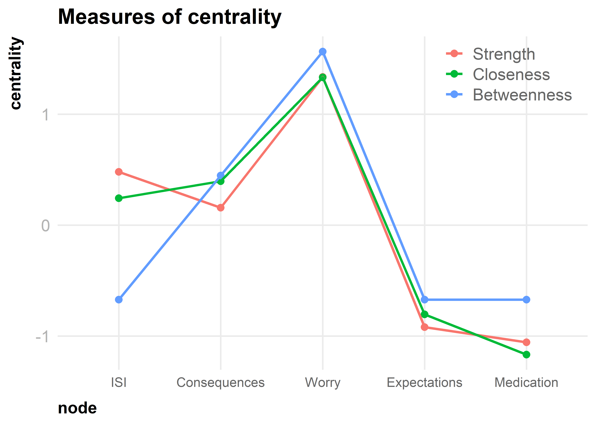
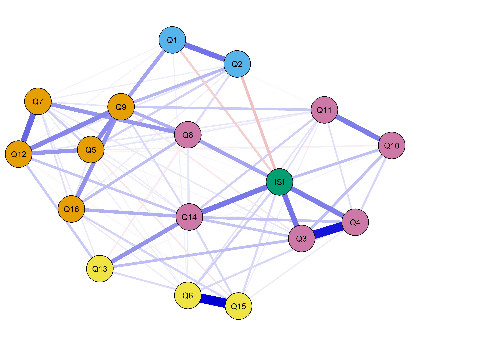
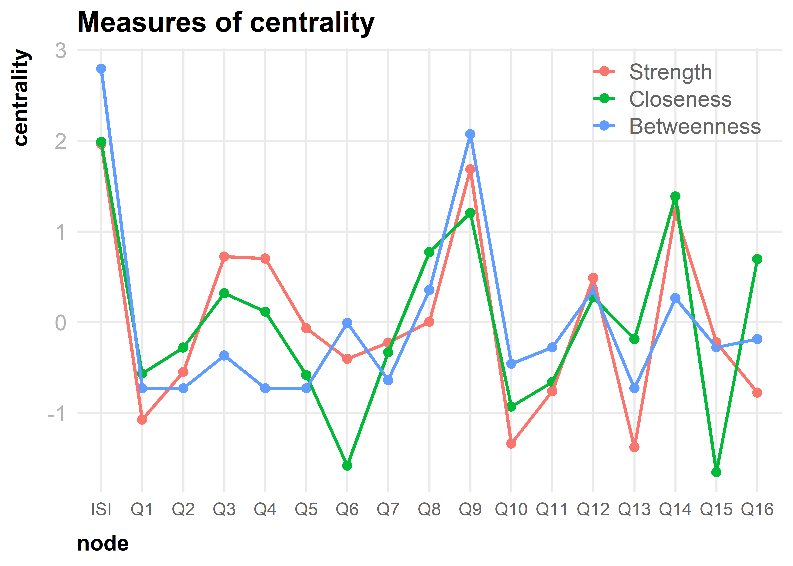

Worry about sleep may be a priority symptom for insomnia treatment.
A network approach of Insomnia and Dysfunctional Beliefs and Attitudes About Sleep
Marwin M. I. B. Carmo 1
@marwincarmo
marwin@usp.br
Renatha El Rafihi Ferreira 1
rerafihi@usp.br
1 Department of Psychiatry, University of São Paulo, Brazil
Introduction
Cognitive processes are crucial to several models of insomnia. Negatively toned cognitive activity triggers arousal and distress, channeling attention and monitoring to sleep and creating distorted perceptions. Challenging unhelpful beliefs about sleep is a crucial element of cognitive-behavioral therapy for insomnia. Understanding how this network of beliefs connects to insomnia severity may provide leads to help targeted interventions.
Objective
In a sample of Brazilian adults, we used a network analysis of cross-sectional data to investigate the associations of dysfunctional beliefs and attitudes about sleep with overall insomnia severity.
Methods
Data were collected from surveys responded to by 1376 adults aged 18 to 59 years, both with and without insomnia symptoms. Participants completed online self-report questionnaires, including Insomnia Severity Index (ISI) and the Dysfunctional Beliefs and Attitudes about Sleep Scale (DBAS-16).
Gaussian Graphical Models were estimated using the GLASSO regularization and EBIC model selection with hyperparameter set to 0.5. We first estimated a network describing the associations between overall insomnia severity and the four factors of DBAS-16. Subsequently, we estimated a network describing the associations between insomnia severity and each of the individual items of DBAS-16.
The stability of node strength was estimated using a case dropping bootstrap procedure (1000 iterations). Node centrality was assessed by strength, closeness, and betweenness – these measures indicate how important nodes are in a network.
Results
Mean age was 38.3 \(\pm\) 9.7 years. Our sample included 927 women and 935 participants with insomnia symptoms.

Figure 1: Network model of DBAS factors and ISI total score. isi = Insomnia Severity Index, worry = Worry about sleep, exp = Sleep expectations, cons = Consequences of insomnia, med = Medication.

Figure 2: Centrality measures of DBAS factors

Figure 3: Network model of DBAS items and ISI total score.

Figure 4: Centrality measures of DBAS items
Worry about sleep was a highly central symptom, indicating its importance as a possible target for cognitive-behavioral therapy for insomnia. Nodes with high centrality indices are important in the flow of information through the network.
We found a negative partial correlation between sleep expectations and insomnia severity. The belief that a poor night of sleep would ruin functioning the next day emerged as the item with the highest strength, closeness, and betweenness. Another item with high centrality indices referred to feelings that insomnia is ruining one’s ability to enjoy life.
Conclusion
Worry about sleep is a factor that can directly influence other nodes.
Belief that a poor night of sleep would ruin functioning on the next day and feelings that insomnia is ruining ability to enjoy life are possible targets for improving CBT-I.
These findings may benefit the efficiency of future intervention studies by identifying priority symptoms for treatment.